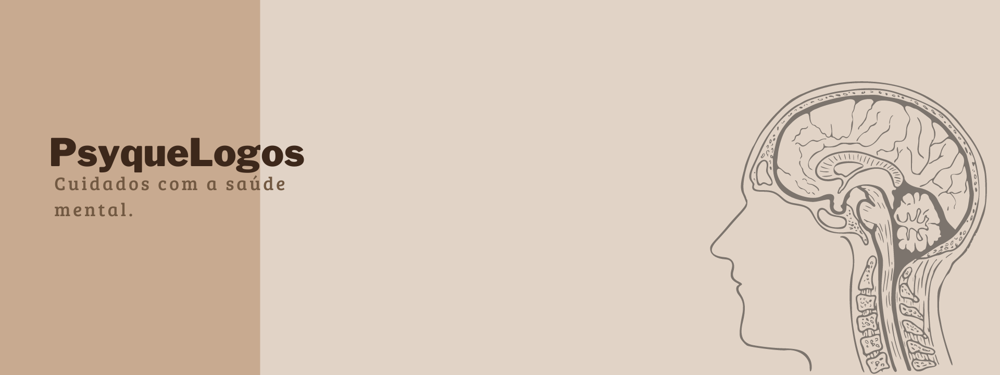
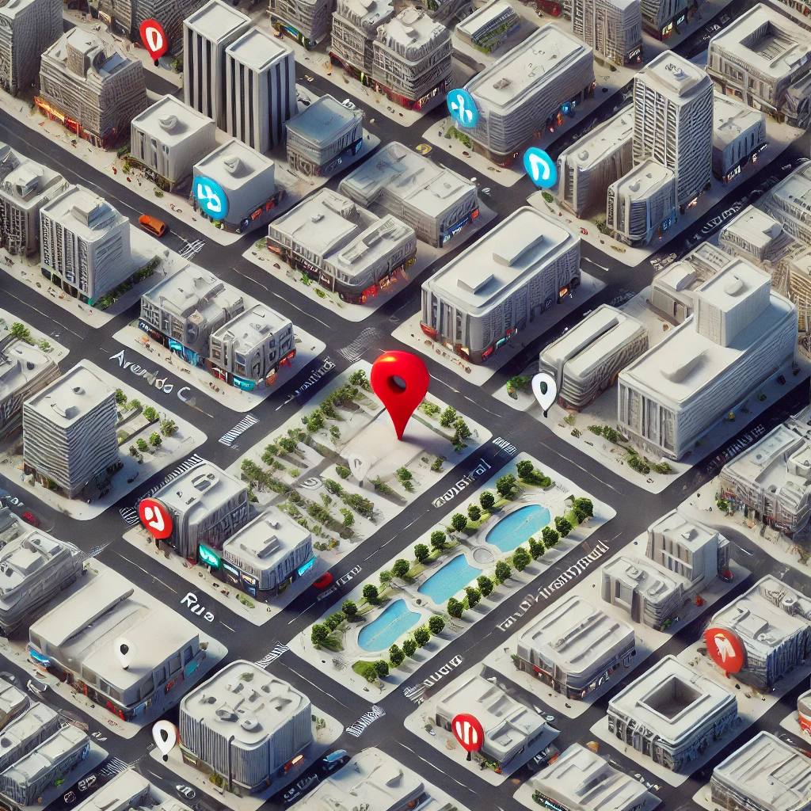

Início
Quem somos?
Na PsyqueLogos, acreditamos que a saúde mental é fundamental para o bem-estar integral de cada indivíduo. Nossa equipe é composta por profissionais altamente qualificados nas áreas de psicologia, psiquiatria e neurologia, todos comprometidos em oferecer um atendimento humanizado e personalizado. Nosso objetivo é criar um ambiente acolhedor e seguro, onde cada paciente se sinta à vontade para explorar seus desafios e encontrar caminhos para uma vida mais plena e equilibrada. Valorizamos a escuta ativa e o respeito, desenvolvendo terapias e tratamentos adaptados às necessidades específicas de cada pessoa. Com uma abordagem multidisciplinar, trabalhamos em conjunto para proporcionar um cuidado integral, integrando diferentes especialidades para promover a saúde mental e emocional de nossos pacientes. Na PsyqueLogos, você encontrará um espaço dedicado à transformação e ao autocuidado, onde sua jornada de bem-estar é a nossa prioridade. Junte-se a nós na busca por uma vida mais saudável e feliz!
Nossas Especialidades
Na PsyqueLogos, estamos dedicados a promover a saúde mental e o bem-estar de nossos pacientes por meio de uma abordagem integrada e acolhedora. Nossa equipe é composta por especialistas em três áreas fundamentais: Psicologia, Psiquiatria e Neurologia.
Psicologia
Oferecemos terapia individual e em grupo, abordando uma variedade de questões emocionais e comportamentais. Nossos psicólogos utilizam técnicas modernas e adaptadas a cada fase da vida, desde a infância até a terceira idade.
Psiquiatria
Contamos com psiquiatras experientes que realizam diagnósticos precisos e oferecem tratamentos medicamentosos quando necessário. Estamos preparados para lidar com transtornos como ansiedade, depressão, transtornos de humor e mais, sempre priorizando o bem-estar do paciente.
Neurologia
Nossos neurologistas avaliam e tratam condições relacionadas ao sistema nervoso, ajudando a identificar e gerenciar doenças como enxaquecas, epilepsia e transtornos de memória, entre outros.
Além disso, temos profissionais especializados no atendimento a crianças e idosos, garantindo que cada faixa etária receba o suporte adequado às suas necessidades. Nossa missão é criar um espaço seguro e acolhedor para todos, promovendo a saúde mental em cada etapa da vida. Na PsyqueLogos, seu bem-estar é nossa prioridade. Junte-se a nós e descubra um caminho para uma vida mais saudável e equilibrada!
Depoimentos
Onde estamos
A PsyqueLogos está localizada em um ambiente acolhedor e de fácil acesso para proporcionar o melhor cuidado à sua saúde mental. Nossa clínica fica na Rua Serenidade, 123, Sala 4, no Bairro Horizonte Claro, em Belo Horizonte - MG. Estamos a poucos minutos do centro da cidade, em uma região tranquila, ideal para momentos de reflexão e autocuidado. Próximo a nós, você encontra estacionamento fácil e diversas opções de transporte público, garantindo uma visita sem complicações. Venha nos conhecer e permita-se o tempo e o espaço para cuidar de sua mente e bem-estar.
Agendamento de Consulta
Está pronto para dar o primeiro passo em direção ao seu bem-estar mental? Na PsyqueLogos, facilitamos o seu agendamento. Basta clicar no link abaixo para conversar diretamente conosco via WhatsApp e garantir o seu horário. É rápido, prático e estaremos prontos para te atender!